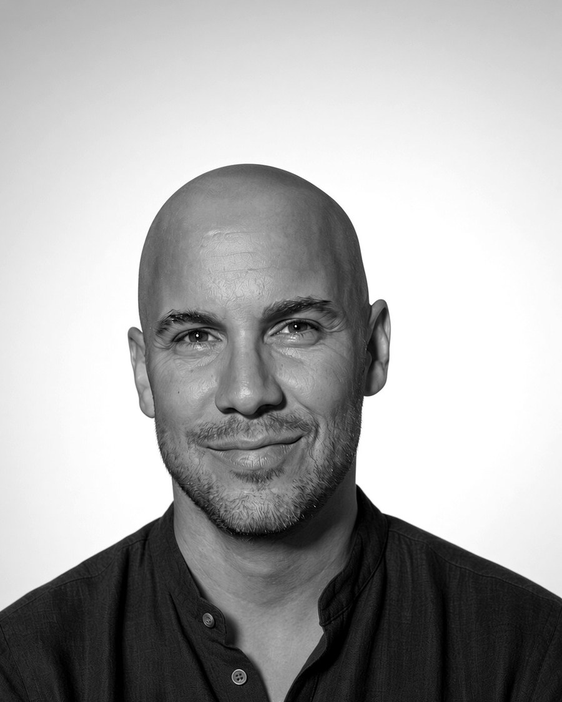

Ari Leal LLC · for clinicians and practices
Clinician-verified Spanish translation of your practice materials, and structured tools you can use in the room. Built by a bilingual, master's-level clinician who knows what these documents have to do.
What's here
brand, logo and website builds
Brand direction, logo, brand manuals and complete website builds for private practices — by someone who knows what a practice site must and must not do. One-time, no maintenance.
See the service →practice documents, clinically drafted
Intake packets, consents, policies, treatment plans and note templates — drafted by a practicing clinician, not pulled from a template pack. English or bilingual.
See the service →proposals for behavioral health
Needs statements, program narratives, logic models, evaluation plans and budget justifications — written by a clinician with an MPA. Flat hourly, no contingency fees.
See the service →treatment guides and practice software
Treatment manuals, protocols, and small applications built for working clinicians — beginning with a pragmatic psychodynamic manual. In development.
See what's coming →translation, verified by a clinician
Intake packets, consents, psychoeducation, aftercare, website copy — translated and then reviewed line by line for clinical accuracy, cultural fit, and exact safety language. Delivered with a signed statement of review.
See the service →structured instruments for the room
Frameworks that organize a conversation and surface pattern — built for clinicians who think structurally. The first are in the making.
See the collection →About

I'm Ari Leal — a master's-level clinician practicing from a psychodynamic core, working in English and Spanish with adults, couples, and groups.
My clinical training is from Northwestern (MA, Clinical Mental Health Counseling) and I'm a Registered Mental Health Counselor Intern in Florida. My undergraduate degree, from Rutgers, is in Hispanic Civilization and Linguistics — which is why the Spanish work here is not simply a matter of being bilingual. I also hold an MPA from Rutgers, and I'm fluent in English, Spanish and Italian.
Before clinical work I spent fifteen years in enterprise roles at UBS, Verizon and JPMorgan Chase — strategy and intelligence, program design, and training at scale. That's the unglamorous half of why this service works: your documents come back on time, formatted correctly, and documented.
Giving back
What this work earns, it owes forward. 1.5% of revenue goes to To Write Love on Her Arms, a Florida nonprofit funding treatment and recovery for people who need it.
Scope
These are professional services between businesses. They are not psychotherapy, not clinical supervision, not clinical consultation on your cases, and not legal or compliance advice. No clinician–patient relationship is created, and nothing here substitutes for your own clinical judgment or your own counsel.
If what you need is supervision or case consultation, I'm not the right person, and I'll say so.
Contact
Tell me what you're working with and what you need. I'll tell you plainly whether I can help, and what it would cost.
ari@arileal.com
(659) ARI-LEAL · 659-274-5325
Ari Leal LLC · professional services for clinicians and practices